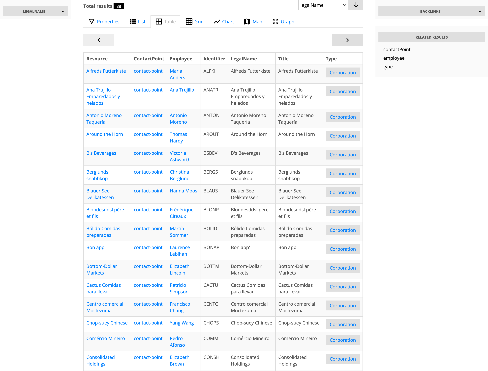
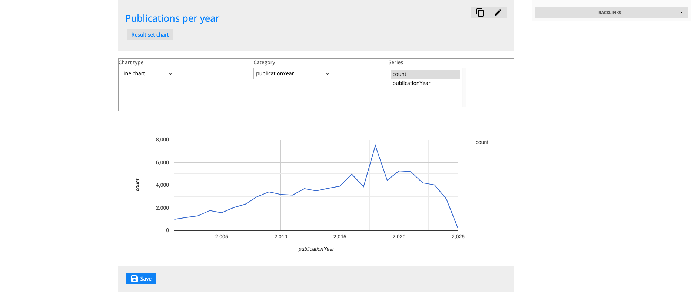

Resource management
Creating and editing RDF resources of built-in and user-defined types
Within documents, users can create RDF resources, i.e. instances of both built-in and user-defined RDF classes.
Built-in classes are defined in system ontologies while user-defined classes are defined in user ontologies.
User-defined classes
TBD
Built-in classes
LinkedDataHub's built-in classes have pre-defined constructors, constraints and often a customized UI rendering (implemented by overriding generic XSLT templates with type-specific templates) as well, for example a query editor or a chart.
Query
Queries are SPARQL 1.1 query strings that can be executed interactively. They can be defined with a SPARQL service that they execute against, otherwise they execute against the application's own SPARQL service.
It is only possible to save valid SPARQL 1.1 query strings. SPARQL updates are currently not supported.
View

Views are interactive, paginated, and optionally ordered results of a SPARQL SELECT result set.
What is rendered in the UI is not directly the tabular result however, but descriptions
of the resources selected
by the result set. That is achieved by on-the-fly SPARQL query rewriting: the SELECT is wrapped into
a DESCRIBE query; DESCRIBE reuses the same variables from the SELECT projection.
This will not work for all SELECT queries.
To render paginated lists of resources, legacy applications would normally have a dedicated API endpoint that supports pagination, ordering etc. In LinkedDataHub, views achieve the same functionality by simply building the SPARQL query string on the client-side. Therefore views can be seen as client-side "containers".
Views can be rendered in multiple layout modes: properties, list, grid, table, map, chart etc. They also show the total number of results and allow result ordering by property.
Chart

Charts can render results of both tabular SPARQL SELECT results and graph results of
DESCRIBE and CONSTRUCT. In that sense they are similar to the chart layout mode in
views, but charts also store the chart type as well as the category and series information:
variable names in the
case of tabular results, and property URIs in the case of graph results.
The default chart type is the table. Other chart types might not apply to all result data; for example a scatter chart will need a numeric or datetime values for both category and series.